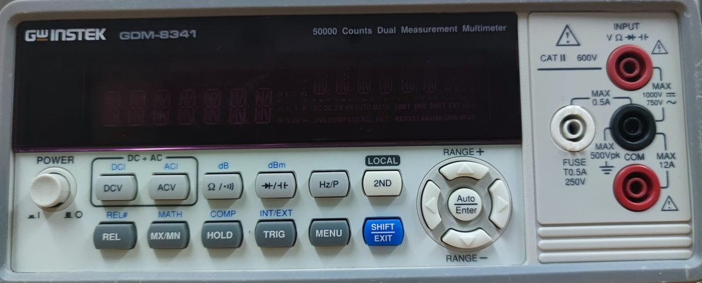

מכשיר ה-GDM-8341 מבית GW Instek הוא רב-מודד ספרתי שולחני מתקדם, המיועד למדידות בדיוק גבוה. המכשיר מתאפיין ברמת רזולוציה של 50,000 ספירות (Counts) ובתצוגה כפולה (Dual Display) המאפשרת למדוד ולהציג שני פרמטרים שונים של אותו אות בו-זמנית.
בעזרת מכשיר זה ניתן לבצע מדידות מורכבות יותר, כגון מעקב אחר מתח ה-DC ורכיב הרעש (Ripple AC) שלו, מדידת מתח ותדר במקביל, או שימוש בפונקציות מתמטיות מובנות לעיבוד המידע בזמן אמת.
באיור משמאל מוצג רב-המודד GDM-8341 המצוי במעבדה. ניתן לראות את לוח המקשים העשיר ואת מסך התצוגה הראשי והמשני. מכשיר זה מציג רגישות ודיוק משופרים ביחס לדגמים בסיסיים יותר, ומתאים לניסויים מתקדמים הדורשים תצוגה סימולטנית של מספר פרמטרים.

רב-המודד המתקדם GDM-8341 בעמדה
תרשים סכמטי של הלוח הקדמי, המקשים והתצוגה הכפולה במכשיר:
אחד היתרונות הגדולים של ה-GDM-8341 הוא היכולת להציג שתי מדידות במקביל. לדוגמה, במדידת מתח חילופין (AC), ניתן להציג את התדר של האות בתצוגה המשנית.
כיצד להפעיל: בצע מדידת מתח כרגיל. לחץ על מקש 2ND ולאחר מכן לחץ על פונקציית המדידה המשנית הרצויה (לדוגמה, מקש Hz). התצוגה המשנית בפינה הימנית התחתונה תידלק ותציג את התדר בזמן אמת.
במדידות של התנגדויות נמוכות (פחות מ-\(10\ \Omega\)), להתנגדות של חוט המדידה (הפרוב) עצמו יש משקל משמעותי שיכול לעוות את התוצאה (התנגדות חוט ממוצעת נעה בין \(0.1\ \Omega\) ל-\(0.5\ \Omega\)).
לחיצה על מקש MATH מאפשרת לבחור מתוך מגוון חישובים שמתבצעים אוטומטית על ערך המדידה הנוכחי:
שני הרב-מודדים קיימים במעבדה. הטבלה הבאה מסייעת להחליט באיזה מכשיר להשתמש:
| תכונה / פרמטר | GDM-8245 (בסיסי) | GDM-8341 (מתקדם) |
|---|---|---|
| דיוק וספירות מסך | 4.5 ספרות (עד 19,999) | 5.5 ספרות (עד 50,000) - דיוק גבוה פי 2.5! |
| תצוגה כפולה (Dual) | לא נתמך | נתמך (ניתן להציג מתח ותדר בו-זמנית) |
| קיזוז יחסי (REL) | לא קיים מקש ייעודי | קיים (קריטי למדידת נגדים קטנים וקבלים) |
| חישובים מתמטיים | רק Max/Min בסיסי | מגוון רחב (MX+B, %, 1/X, dB, dBm) |
| חיבור מחשב (USB/GPIB) | לא נתמך | נתמך (נוח לאיסוף נתונים רציף במחשב) |
בניסוי זה נשתמש ברב-המודד המתקדם GDM-8341 כדי למדוד נגד בעל התנגדות נמוכה במיוחד (\(2.2\ \Omega\)) תוך קיזוז התנגדות המוליכים, ונציג את מתח ה-AC ותדר האות של מחולל האותות בו-זמנית.